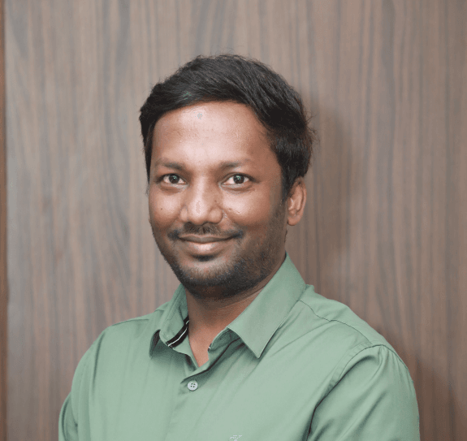
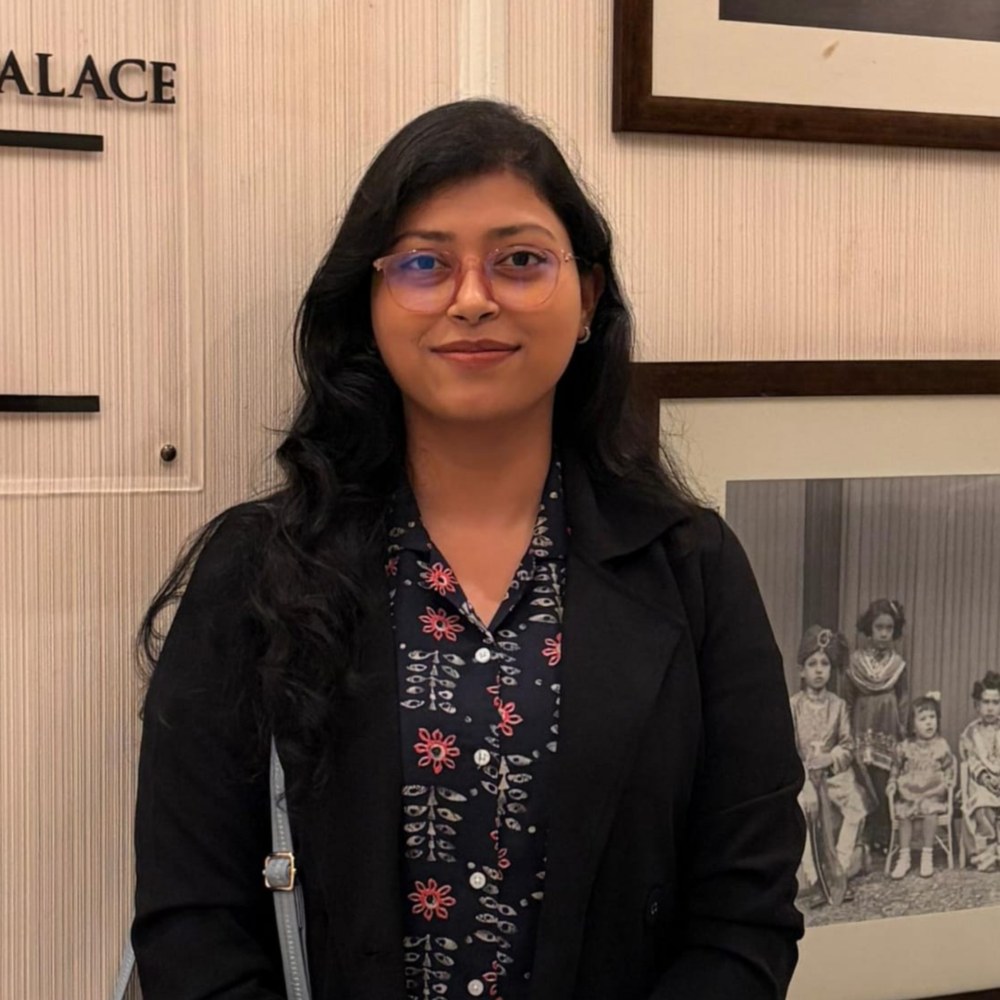
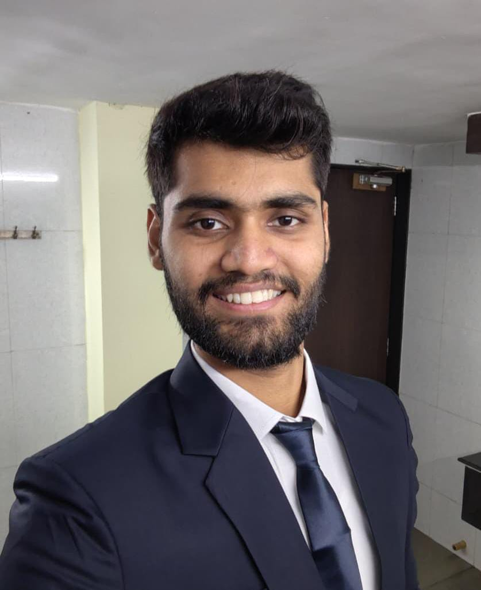
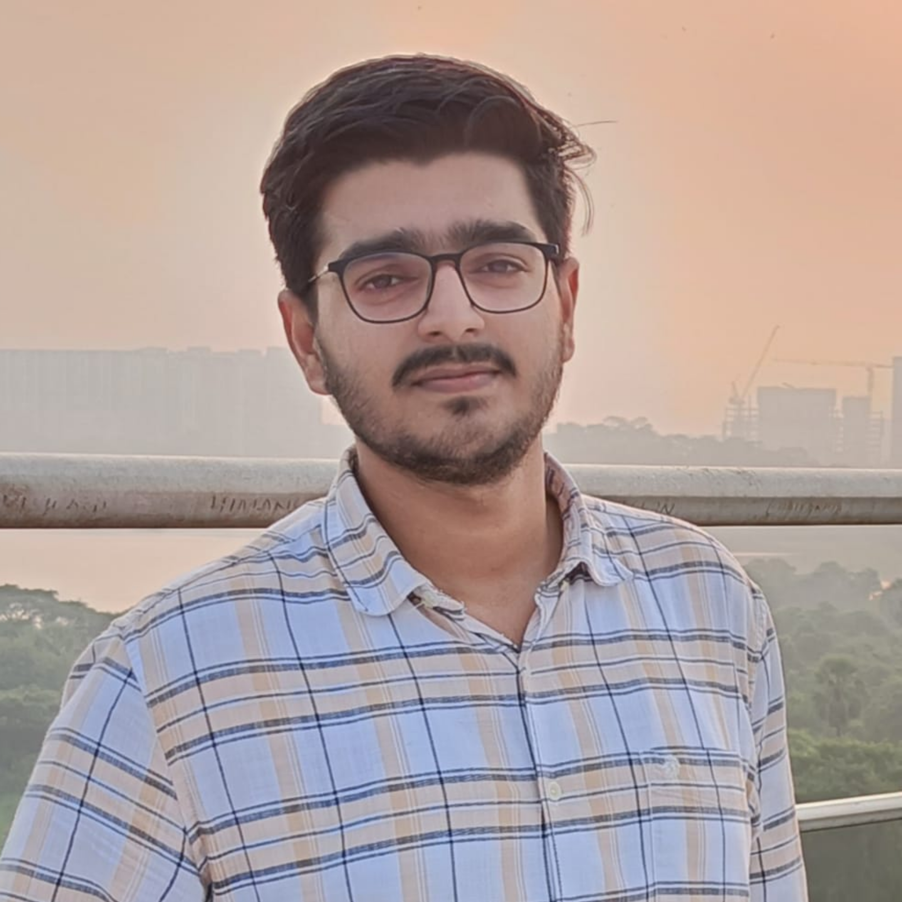
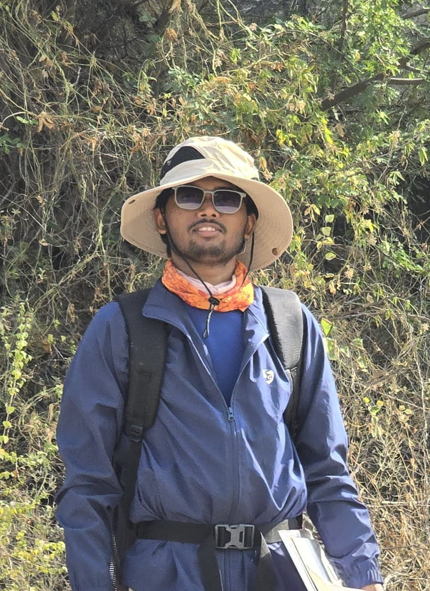
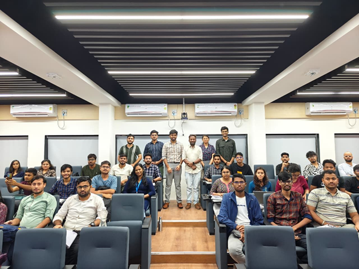
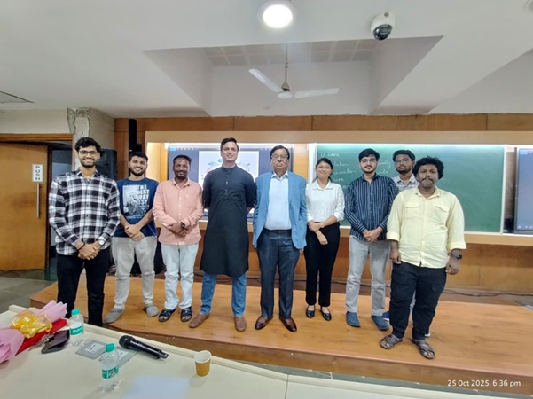
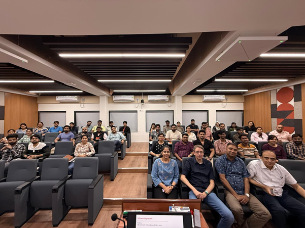

Department of Earth Sciences
The SPE Student Chapter at IIT Bombay is a dynamic student-led organization affiliated with the Society of Petroleum Engineers (SPE). It serves as a platform for students interested in petroleum engineering, energy technologies, and related fields. The chapter's mission is to enhance technical knowledge, foster leadership skills and bridge the gap between academia and industry.
Key activities includes technical events including workshops, seminars, and guest lectures by industry experts covering topics in petroleum engineering, energy transition, and sustainability. The chapter also encourages Industry engagement and networking opportunities for students to connect with professionals and alumni, facilitating career development and mentorship.
As part of a global network, the SPE chapter at IIT Bombay provides members with resources, opportunities, and professional growth in the dynamic energy landscape.

Faculty Advisor

President

Vice President

General Secretary

Treasurer

Membership Chair
Topic : Fundamentals of Coring, Core Analysis and Applications in Reservoir Simulation using MS Excel
Speaker : Mr. Vinod Kumar Madem, Reservoir Engineer, Oilmax Energy

The SPE IIT Bombay Student Chapter, in coordination with the ERSA Council, Department of Earth Sciences, IIT Bombay, successfully hosted its first workshop under the new council on 6th September 2025.
With more than 50 enthusiastic participants, the session offered deep insights into coring, core analysis, its critical role in reservoir studies, and practical applications in dynamic simulations using MS Excel! The interactive discussions sparked curiosity and enriched learning for all attendees.
We extend our heartfelt thanks to Mr. Vinod Kumar Madem for sharing his expertise on reservoir engineering and to all participants for making this workshop a success. Also, we thank current Faculty Advisor hashtag Prof. Vivek Kumar and former Faculty Advisor for the chapter Prof. Bharath Shekar for enhancing the workshop by their presence.
Topic : Founder and Formation: Geoscience in the Era of Startups
Speaker : Prof. Vikram Vishal, Department of Earth Sciences, IIT Bombay

The session offered a deep dive into the evolving landscape of geoscience-driven entrepreneurship — exploring how innovation, technology, and research are shaping the future of startups in the energy and geoscience sectors.
We extend our heartfelt gratitude to our Guest of Honour, Mr. Niladri Mitra, Chairman, SPE Mumbai Section, for gracing the occasion with his presence and words of encouragement. A big thank you to all participants and volunteers who made this event a grand success!
Topic : Phosphorus controls on Earth's early oxygenation history
Speaker : Prof. Simon Poulton, School of Earth and Environment, University of Leeds, UK

We are delighted to announce that the SPE IIT Bombay Student Chapter successfully conducted an informative talk by Prof. Simon Poulton of the School of Earth and Environment, University of Leeds, UK at the Department of Earth Sciences at IIT Bombay on the topic of "Phosphorus controls on Earth's early oxygenation history". A huge thanks to all the volunteers and attendees that helped make this event a huge success! Watch this space for additional thought-provoking programs and educational opportunities.
With more than 50 enthusiastic participants, the interactive discussion sparked curiosity and enriched learning for all attendees.
If you are a new member and would like to join the SPE IIT Bombay Student Chapter, follow the instructions in the document below.
Download Registration GuideExisting members can renew their SPE membership by following the steps provided in the document below.
Download Renewal Guide